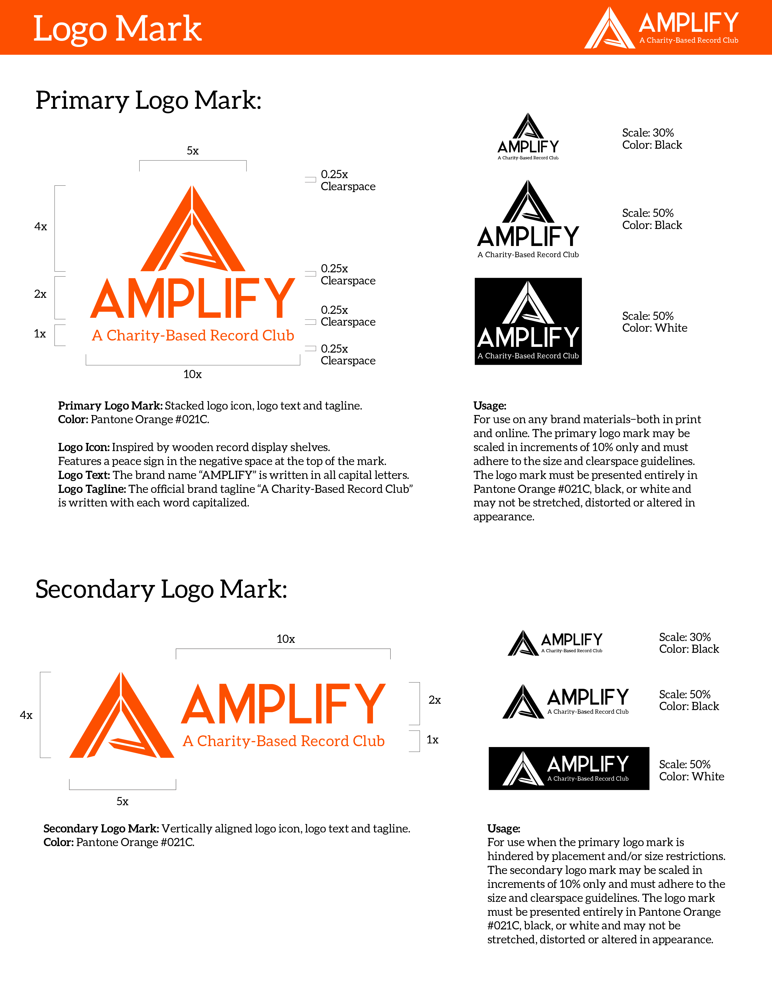
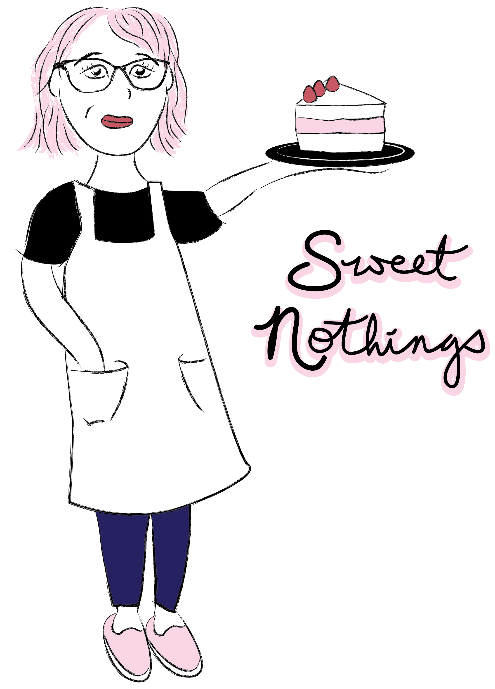

Home
Design
Logos
About
Logos and Typography
Amplify - Logo Mark

Amplify - Logo Mark Guidelines
RIPPLE - Display Typeface
RIPPLE - Display Typeface
Sweet Nothings - Logo Mark

Sweet Nothings - Brand Identity
Back to Top